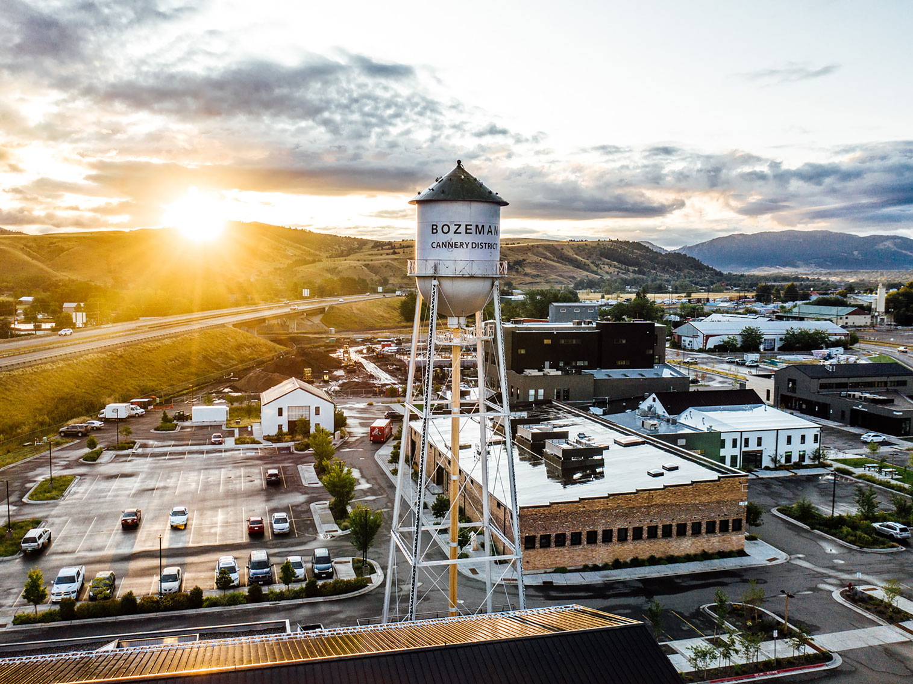
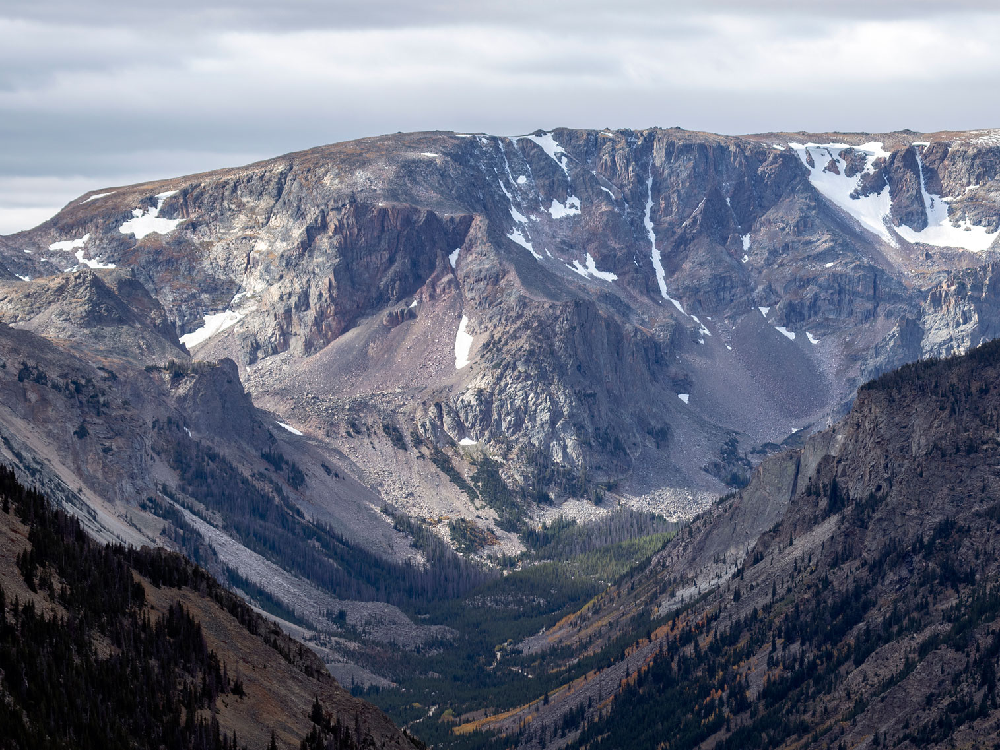
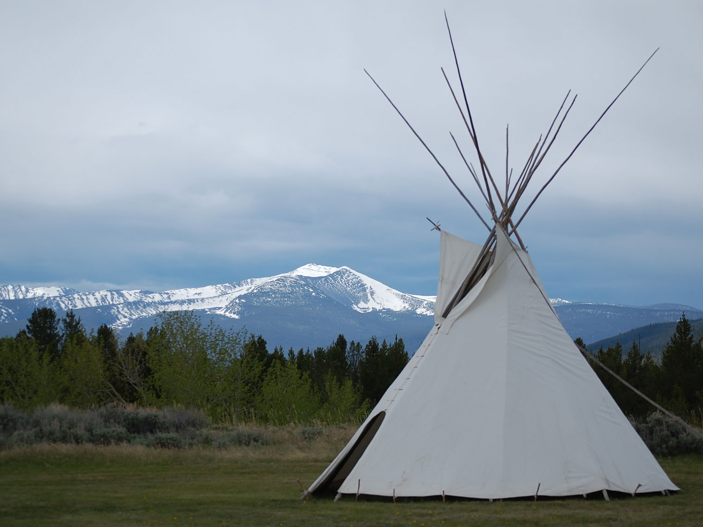
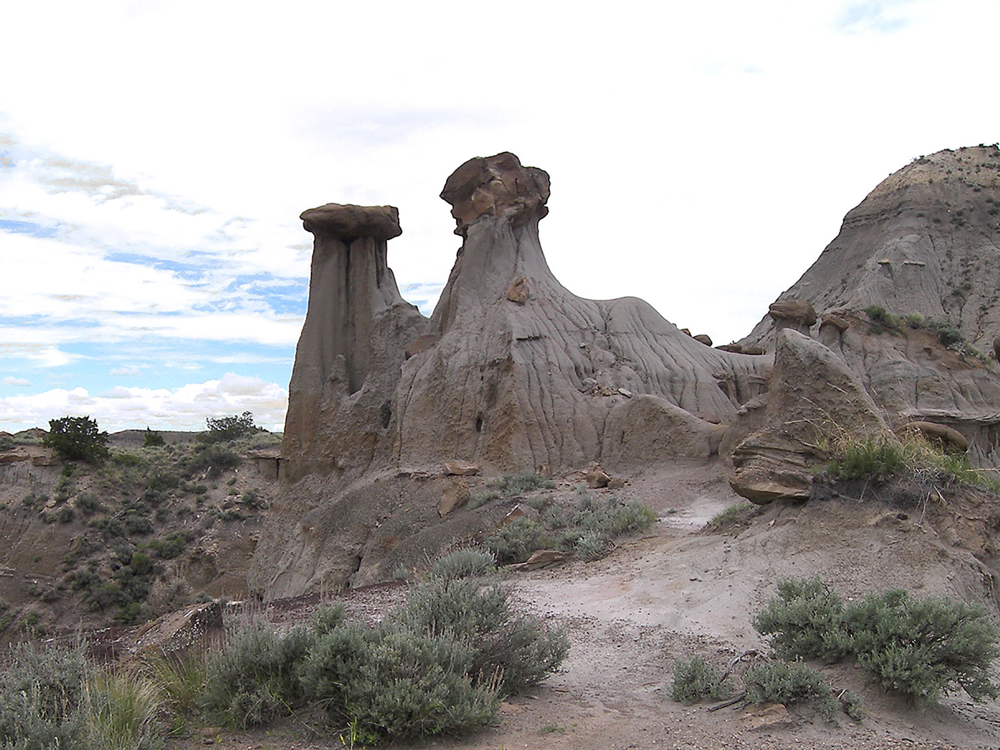

Montana Travel Guide
Explore Glacier and Yellowstone's wild edges, hike Big Sky's mountain ranges, and roam Montana's vast prairies and badlands under endless skies.
Top Locations


-400.jpg)


Montana Map
Places to See in Montana

Sunrise at Cannery District in Bozeman, Montana
Kody McCormick Kyler McCormick, CC BY-SA 4.0, via Wikimedia Commons; Image Size Adjusted

Cities

Glacier National Park★
National park encompassing over 1 million acres and includes parts of two sub-ranges of the Rocky Mountains, over 130 named lakes, more than 1,000 different species of plants, and hundreds of species of animals

Rock Creek Valley from the Beartooth Highway. Hellroaring Plateau is beyond
Acroterion, CC BY-SA 4.0, via Wikimedia Commons; Image Size Adjusted

Landmarks and Landscapes

Along the Nez Perce National Historic Trail, Big Hole Valley
Forest Service Northern Region from Missoula, MT, USA, Public domain, via Wikimedia Commons; Image Size Adjusted
.jpg){kind=link}

Rock Creek Valley from the Beartooth Highway. Hellroaring Plateau is beyond
Acroterion, CC BY-SA 4.0, via Wikimedia Commons; Image Size Adjusted
State Parks
Overview
Montana, "Big Sky Country," is the fourth-largest state by area and one of the least densely populated, and people come for its wide-open landscapes, wildlife, and outdoor recreation. Within a day's travel a visitor can move from glacier-carved peaks and alpine lakes to blue-ribbon trout rivers, rolling high plains, badlands, and historic mining and cowboy towns. Helena is the capital and Billings is the largest city.
Visitors come to hike and drive through Glacier National Park, enter Yellowstone through its north and west gateways, fly-fish the Madison, Gallatin, and Yellowstone rivers, ski at Big Sky and Whitefish, and watch for grizzly bears, bison, elk, and bighorn sheep. Others come for dude ranches, Western history, Native American heritage, and the small-town hospitality of places like Missoula, Bozeman, and Virginia City.
Geography
Montana is divided by the Continental Divide into two distinct halves. The western third is a landscape of mountain ranges, including the Bitterroot, Mission, Swan, and Beartooth ranges, separated by forested valleys and large lakes such as Flathead Lake, the largest natural freshwater lake west of the Mississippi. East of the mountains the land flattens into the Great Plains, with rolling prairie, river breaks, and badlands that stretch to the North Dakota border. Granite Peak, at 12,807 feet, is the highest point. Three major rivers, the Missouri, Yellowstone, and Clark Fork, drain the state, and the Missouri begins at the confluence of the Jefferson, Madison, and Gallatin rivers near Three Forks.
History
Native peoples, including the Blackfeet, Crow, Salish, Kootenai, Cheyenne, Assiniboine, and Gros Ventre, have lived here for thousands of years, and buffalo hunting shaped plains cultures. The Lewis and Clark Expedition crossed the region in 1805-06 after the Louisiana Purchase, and fur traders and missionaries followed. Gold discoveries at Grasshopper Creek in 1862 and Alder Gulch in 1863 brought a rush of settlers, and Montana Territory was created in 1864. Conflicts such as the Battle of the Little Bighorn in 1876 and the Nez Perce War of 1877 marked the end of the open-range era for many tribes. Copper mining in Butte, cattle ranching, and the arrival of the railroads drove growth, and Montana became the 41st state on November 8, 1889.
The Rockies and Glacier National Park
The Northern Rocky Mountains cover roughly the western third of Montana and hold the state's best-known scenery. Glacier National Park, in the northwest corner along the Canadian border, protects more than a million acres of jagged peaks, glacier-carved valleys, and clear lakes such as Lake McDonald. The park's Going-to-the-Sun Road crosses the Continental Divide at Logan Pass, and popular hikes include the Highline Trail and Grinnell Glacier. Together with Waterton Lakes National Park in Canada it forms the Waterton-Glacier International Peace Park, a UNESCO World Heritage Site. Montana also contains the north and northwest edges of Yellowstone National Park, which are reached through the gateway towns of Gardiner and West Yellowstone.
National Protected Areas
Beyond Glacier, Montana has several national monuments, recreation areas, and historic sites. Little Bighorn Battlefield National Monument preserves the site of the 1876 battle, and Big Hole National Battlefield and Bear Paw Battlefield commemorate key events in the Nez Perce War. Upper Missouri River Breaks National Monument protects a wild stretch of the river followed by Lewis and Clark, and Pompeys Pillar National Monument holds William Clark's signature carved in 1806. Bighorn Canyon National Recreation Area offers boating beneath towering canyon walls, Grant-Kohrs Ranch National Historic Site preserves a working 19th-century cattle ranch, and Rattlesnake National Recreation Area lies just north of Missoula.
State Parks and Historic Sites
Montana's state parks preserve landscapes, caves, and cultural history. Lewis and Clark Caverns State Park, one of the largest limestone caverns in the Northwest, is among the most popular, and Makoshika State Park is the state's largest, with badlands and fossils near Glendive. Missouri Headwaters State Park marks the birthplace of the Missouri River, and First Peoples Buffalo Jump State Park is one of the largest buffalo jumps in North America. Other historic sites include Chief Plenty Coups State Park, Travelers' Rest State Park, and the mining ghost towns of Garnet and Virginia City.
Seasons and When to Visit
Summer, from late June through early September, is the busiest season, with hiking, camping, fishing, rafting, and the full opening of Going-to-the-Sun Road, which is typically open only from late June to mid October. Wildflowers peak in July and August, and wildfire smoke can occasionally affect views in late summer. Fall brings golden larches and aspens, elk bugling, hunting season, and far fewer crowds. Winter is long and cold, but draws skiers and snowboarders to Big Sky, Whitefish Mountain Resort, and Bridger Bowl, along with snowmobiling and wildlife viewing in the Yellowstone area. Spring is a quiet shoulder season of snowmelt and mud, when higher roads remain closed and rivers run high, though wildlife viewing and lower-elevation hiking improve by May.
This article uses material from the Wikipedia article "Montana", which is released under the Creative Commons Attribution-Share-Alike License 3.0. Additional information was drawn from the National Park Service, Montana Fish, Wildlife & Parks, and Visit Montana.